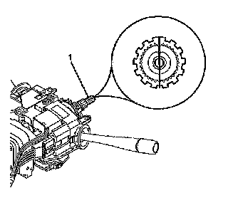
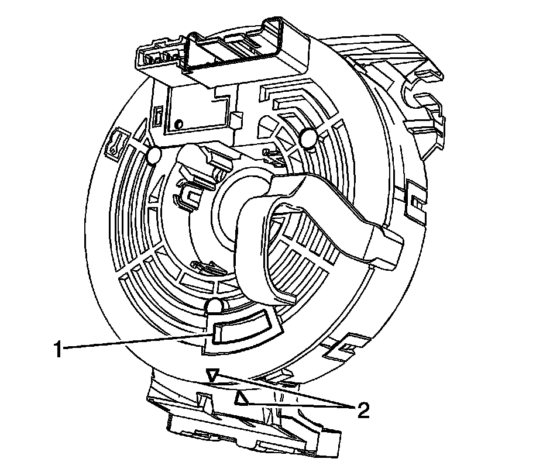

Inflatable Restraint Steering Wheel Module Coil Centering
INFLATABLE RESTRAINT STEERING WHEEL MODULE COIL CENTERING

1. NOTE: The new SIR coil assembly will be centered. Improper alignment of the SIR coil assembly may damage the unit, causing an inflatable restraint malfunction.
IMPORTANT: If double wire harness strap is installed onto the wire harness assembly and column, you must reuse the holder for the wire straps during installation.
Remove the wire harness strap(s) where necessary.
Verify the following conditions before centering the SIR coil:
- The wheels on the vehicle are straight ahead.
- The block tooth (1) of the steering shaft assembly is in the 12 o'clock position.
- The ignition switch is in the LOCK position.

2. The front of the SIR coil has a centering window (1). To center the SIR coil perform the following steps:
1. Hold the SIR coil with the face up.
2. Rotate the coil hub clockwise until the coil ribbon stops.
3. Rotate the coil hub slowly, counterclockwise until the centering window appears yellow (1) and both arrows (2) line up. This is the CENTER position.
4. While holding the coil hub in the CENTER position, align the SIR coil with the horn tower and slide onto the steering shaft assembly.
3. If a double wire harness strap is installed onto the wire harness assembly and column, you must route the wires up against the steering column. One wire harness strap will surround one lead from the coil to the steering column. The other wire harness strap will surround all other leads to the steering column.